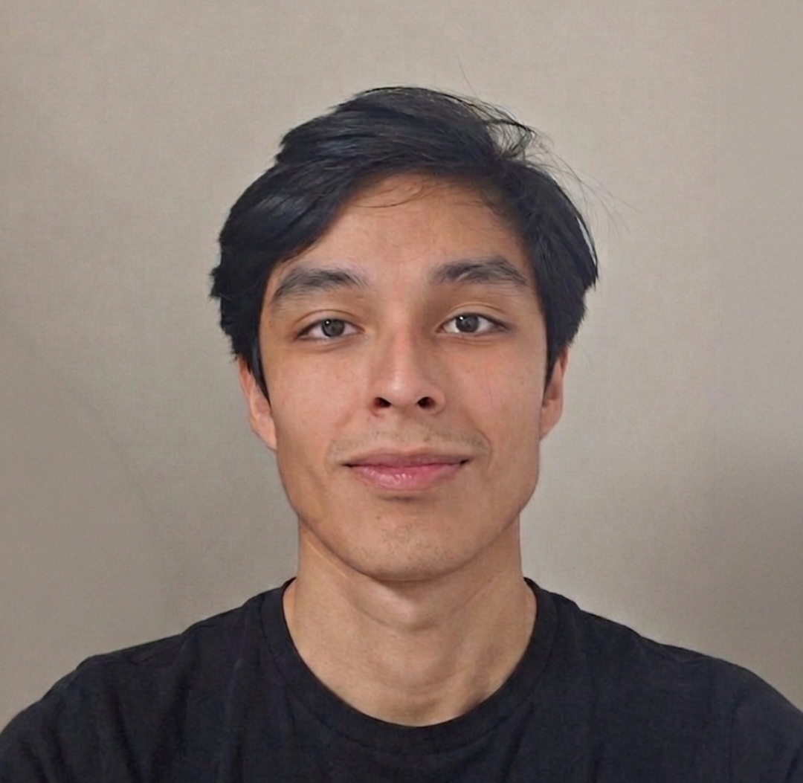

Farfan G. Pedro

Currículum
Técnico con formación completa en bomberos — incendio, socorrismo y rescate vehicular — y en instalaciones de gas. Experiencia real en intervenciones de emergencia, obras y atención en contexto hospitalario de urgencias. Habituado a trabajar bajo presión y en condiciones climáticas extremas, con entrenamiento en protocolos de seguridad y operación coordinada en equipo
Educación
- Licenciatura en Sistemas · UNTDF · Ushuaia · En formación
- Gasista de Unidades Unifuncionales y Domiciliario · CEFLU · Ushuaia · 2025
- Academia Nacional de Bomberos Voluntarios de Ushuaia (BVU) · Tierra del Fuego · 2024
Experiencia Laboral
- Co-fundador y Técnico en Gas · Flamazul · Ushuaia · 2023 – Actualidad
- Gestión integral del emprendimiento: presupuestos, coordinación de obra y atención al cliente.
- Instalación de calderas y sistemas de calefacción en obras domiciliarias e industriales.
- Tendido de cañerías de gas conforme normativa CAMUZZI / ENARGAS.
- Elaboración de planos técnicos 2D en AutoCAD para documentación de instalaciones.
- Camillero · Clínica San Jorge · Ushuaia · 2025 – Actualidad
- Traslado de pacientes y asistencia en urgencias junto a personal médico y de enfermería.
- Trabajo bajo presión con protocolos sanitarios estrictos en turnos rotativos.
- Bombero — Incendio, Socorrismo y Rescate Vehicular · BVU · 2023 – 2026
- Formación completa y participación activa en intervenciones reales de incendio estructural
- Socorrismo y primeros auxilios: estabilización, traslado e intervención pre-hospitalaria en terreno.
- Rescate vehicular con técnicas de excarcelación y extricación — herramientas hidráulicas y de corte.
- Operaciones bajo cadena de mando en condiciones invernales y terrenos de alta dificultad.
Habilidades
- Instalación de gas — normativa CAMUZZI / ENARGAS
- Instalación de calderas y calefacción
- AutoCAD — planos técnicos 2D
- Combate de incendios estructurales y forestales
- Socorrismo y primeros auxilios en terreno
- Rescate vehicular — excarcelación y extricación
Certificaciones
- Gasista de Unidades Unifuncionales
- Gasista Domiciliario
- Bombero Voluntario Nacional
Información Adicional
Mis hobbies
Contacto